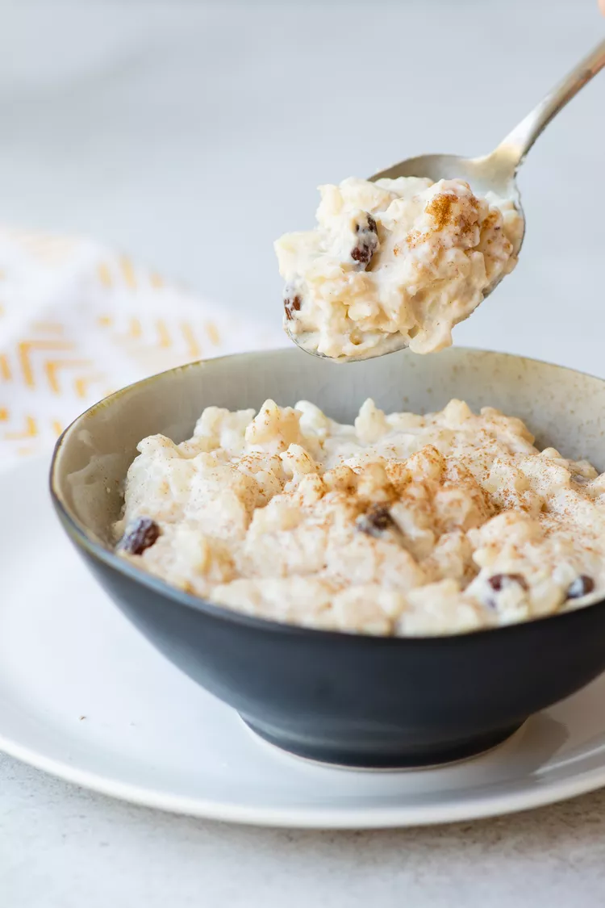

Lasagna
Home

Description
Our milchreis is the perfect alternative to your morning oatmeal or a great option for a warm dessert.
Ingredients
- White rice
- Sugar
- Salt
- Milk
Steps
- Mix the rice, sugar, and salt in a large saucepan, pour in milk.
- Place the mixture over medium heat and bring to a boil, stirring often.
- Reduce the heat and simmer for 30 minutes, or until the rice is soft and the mixture becomes thick. Stir often.
- Optional. A dollop of fruit compote, fresh fruit, or your favorite combination of toppings makes this a really special sweet treat.